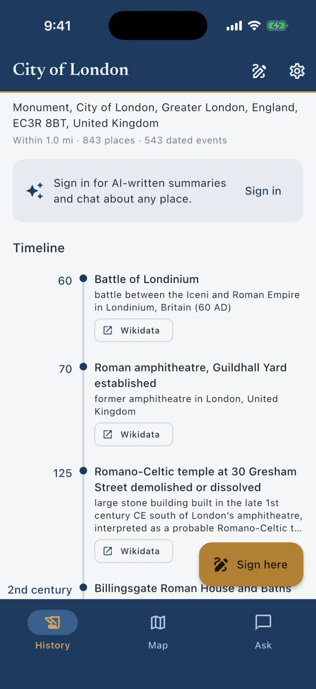
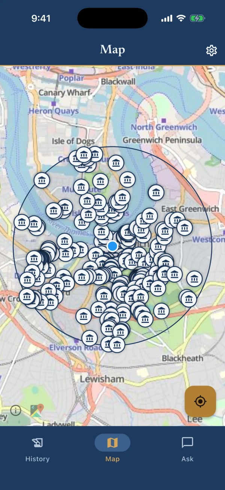
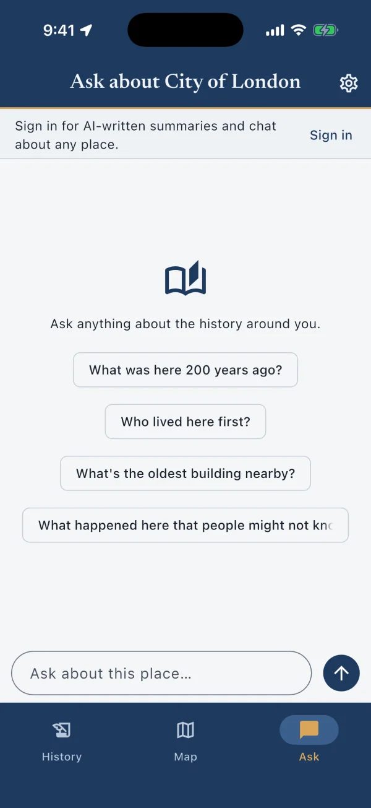

The story of where you are.
Mhory is an app for iPhone and Android that details the history of your current location. Drawing on the public record, Mhory uses AI to write a short account with a timeline, then answers whatever you want to ask about the place.

What it does
Mhory creates a written history based on your current location.
Ever wondered what happened where you're standing? Be the smartest person in the area. Mhory quickly provides the compelling facts for you.
Start where you stand
Your location sets the starting point while the app is open, or press and hold anywhere on the map to pick a spot instead. You choose how far to look, from a mile around you to twenty-five.
Mhory searches the public record
Mhory gathers geotagged Wikipedia articles, dated facts from Wikidata, historic features from OpenStreetMap, and official listings from the US National Register of Historic Places and Historic England. Duplicate records are merged, while every entry keeps a link to its source.
AI writes the account
Claude turns historical records into a short account, organizes the history into eras, and highlights the moments that shaped the area. It writes only from the material Mhory provides.
Follow the timeline back
Trace the place from the present to its earliest available records. Tap any event to see where it came from.
The three views
History, Map and Ask
Screens from the app, looking one mile around: History and Ask at Pudding Lane in the City of London, the Map at Greenwich. Map data © OpenStreetMap contributors.
History
The AI summary, the eras, and the timeline for where you are. Everything here links back to its source.

Map
See the historical places around you on an interactive map. Tap a pin to learn more, or press and hold anywhere to uncover the history of a nearby location.

Ask
Ask follow-up questions about the place and receive answers grounded in the records Mhory gathered. Citations are tappable, and when a short entry is not enough, Mhory can consult the full Wikipedia article before answering.
Example
What a reading looks like
A timeline for Pudding Lane in the City of London, written by hand from the same records Mhory reads, to show the shape of what the app produces.
-
c. AD 47
Londinium is founded
The Romans establish a port on this stretch of the north bank. The lane runs down toward the site of their quays.
-
2 Sept 1666
The Great Fire begins
Fire breaks out in Thomas Farriner's bakehouse on Pudding Lane in the early hours. Over four days it destroys most of the medieval city, including some 13,000 houses, 87 parish churches and St Paul's Cathedral.
-
1677
The Monument is completed
A 202-foot column commemorating the fire. Its height equals the distance from its base to the site of the bakery where the fire started.
-
29 Dec 1940
The Blitz
The heaviest incendiary raid of the war sets the City alight in what is later called the Second Great Fire of London. St Paul's survives.
-
Now
Your mark
If you sign the timeline here, your mark appears at this point, in brass, alongside the recorded past.
Your trail
Signing the timeline
At any place, you can leave a mark with an optional note. Marks appear on the timeline and the map next to the historical entries, and they're kept on your phone only. Nothing you write is uploaded.
Accounts and cost
Free to start
History, the timeline and the map work without an account. The AI summary and Ask need you to sign in with Apple or Google. Signing in is what lets Mhory provide the AI features at no setup cost to you. New accounts get a free monthly allowance of summaries and chat messages. Mhory Plus, a subscription through the App Store or Google Play billed monthly or yearly, raises those limits well beyond normal use.
No account
Free
History, the timeline and the map, for any place.
Signed in
Free allowance
A monthly allowance of AI summaries and Ask messages, with Apple or Google sign-in.
Mhory Plus
Subscription
Limits well beyond normal use. Billed monthly or yearly through the App Store or Google Play.
Sources and privacy
Where the history comes from
Wikipedia
Geotagged articles about the places around you.
Wikimedia Foundation
Wikidata
Dated facts: when things were founded, built, opened or lost.
Wikimedia Foundation
OpenStreetMap
Historic features on the map, and place names through Nominatim.
OpenStreetMap Foundation
National Register of Historic Places
Official listings across the United States.
US National Park Service
National Heritage List for England
Listed buildings and scheduled monuments in England.
Historic England
Each source receives the coordinates needed to answer a request and nothing about you.
Your location is used while the app is open and isn't stored by us. There are no advertising or analytics trackers. The full details are in the Privacy Policy.